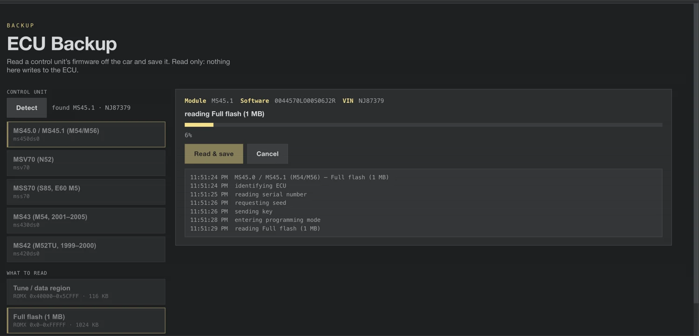
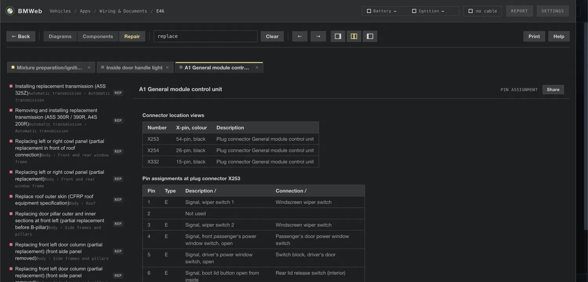
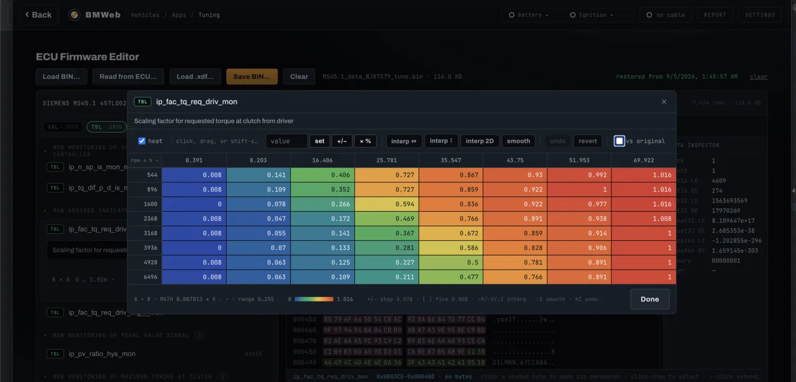
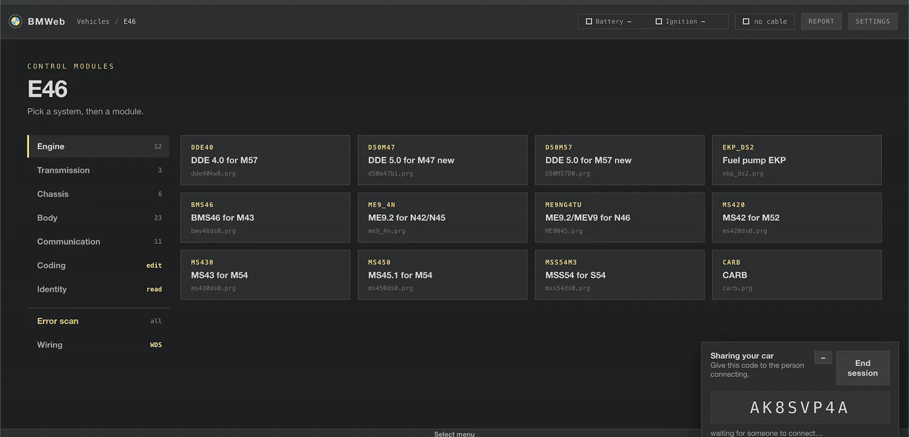
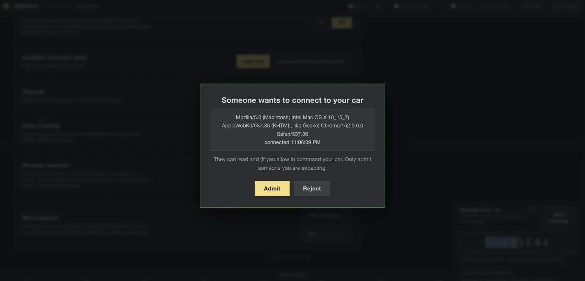

Find out what's wrong with your BMW, right in your browser.
Plug a cheap diagnostic cable into your car, open BMWeb, and see what the dealer's computer sees: fault codes in plain English, live engine data, and component tests. Free, nothing to install.
Open BMWeb Works with 1996 to 2006 BMWs (E36, E39, E46, E53 and more)










A look inside BMWeb. Click a screen to enlarge it, or see every screen.
What you need
Three steps
Plug in the cable.
One end in the car, the other in your computer. Turn the
ignition on.
Open BMWeb and pick your car.
Click the orange button above, choose your model, and allow the
cable when the browser asks.
Read your car.
Scan every module for faults, watch live data, or test
components. The same screens BMW technicians used.
Common questions
- Is it safe to poke around?
- Reading is completely safe, you're only listening. Anything that changes the car asks you first.
- Does it cost anything?
- No. BMWeb is free and open source. Your only cost is the cable.
- Will it work on my phone?
- For everything that does not touch the car. Download the offline zip and open it in Microsoft Edge (iPhone and Android are both supported) for fault lookup, wiring diagrams, documents and parts. Talking to the car needs the K+DCAN cable and a desktop browser with Web Serial, which phones do not have.
- Do I need internet at the car?
- Only the first time. Once BMWeb has loaded, it works offline, and there are offline downloads too.